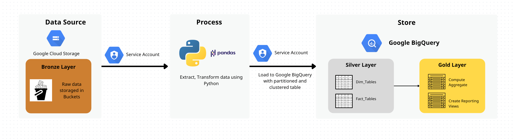
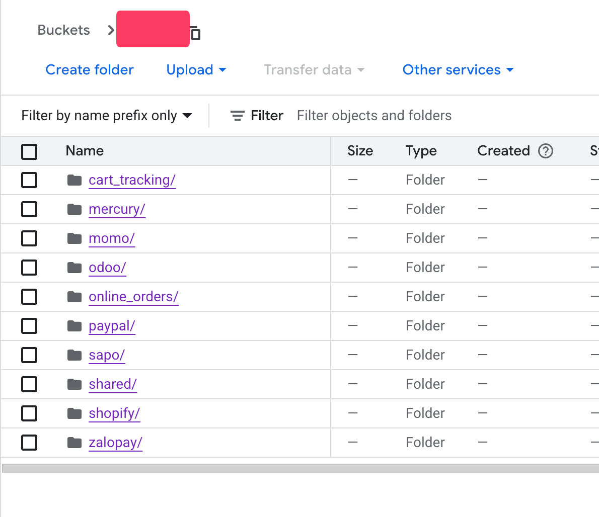
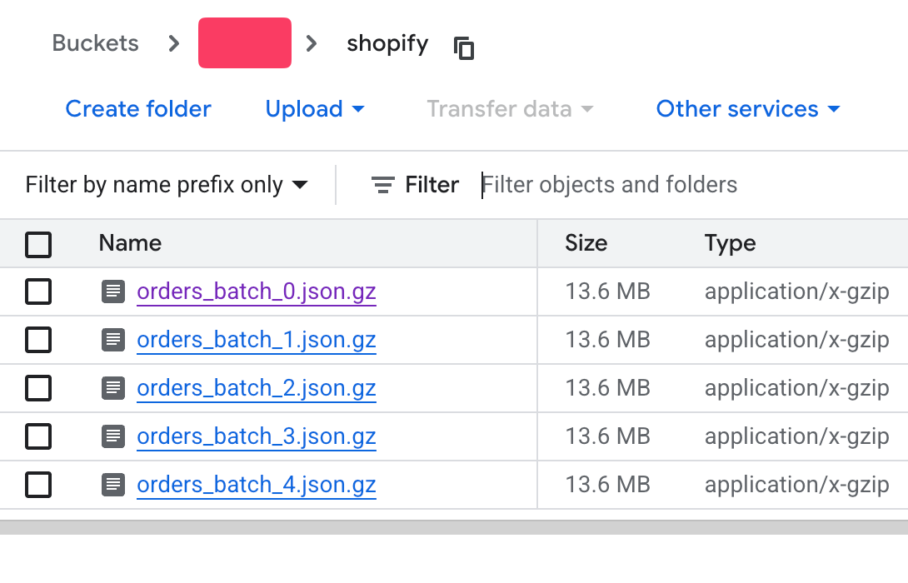
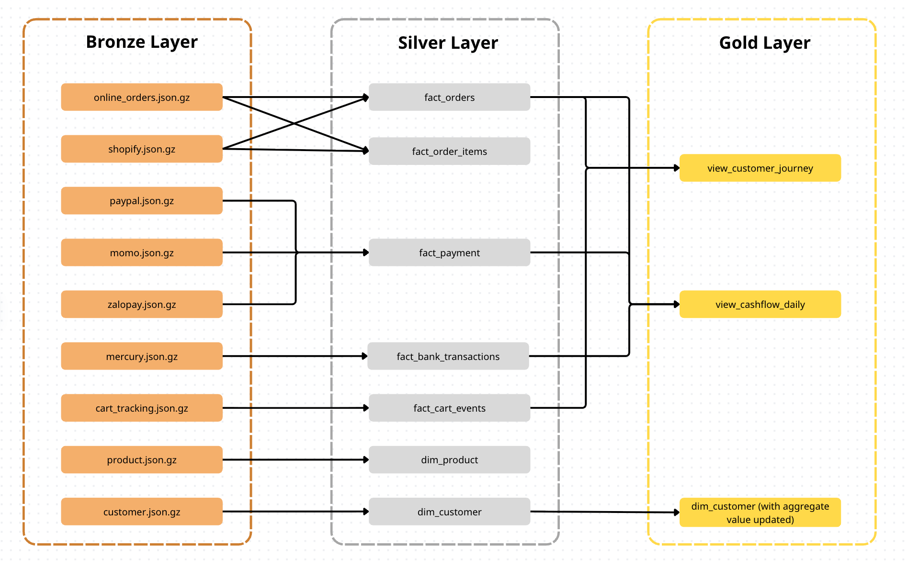
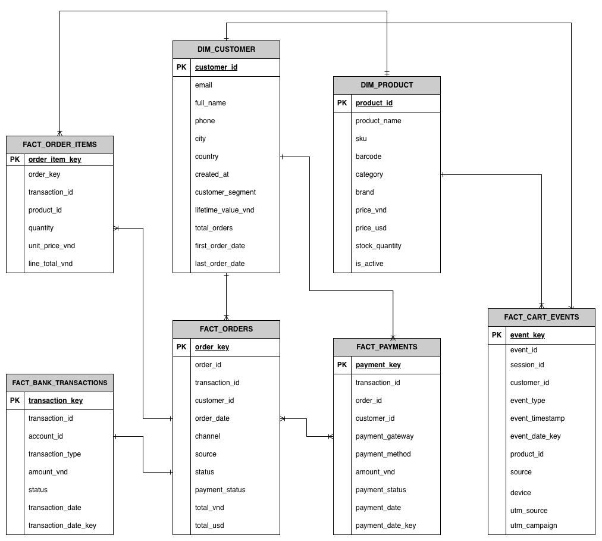

Building an Omnichannel Retail Data Pipeline
I built an ETL pipeline to process millions of sales records for a fast-growing technology retail chain. Driven by a custom Python orchestrator, the system cleans raw data and calculates customer segments — delivering an analysis-ready Data Warehouse for the analytics team.
01. Business Challenges
A fast-growing technology retail chain — selling through both Shopify storefronts and direct online order systems — had no unified view of its own business. Sales data, payment records, and customer behaviour each lived in completely separate systems, managed by different teams.
Every month, analysts had to manually pull data from multiple sources, reconcile mismatched IDs, and stitch together reports in spreadsheets. The result: slow decisions, inconsistent numbers, and zero visibility into which customers were becoming loyal — and which were silently churning.
Data Silos
Shopify, Online Orders, ZaloPay, MoMo, PayPal, and Mercury Bank — all storing data independently, with no shared schema.
No Customer View
Tracking a single customer's journey across channels — from cart event to payment — was practically impossible.
Manual Reporting
Cashflow and sales reports were compiled by hand each month, making them slow, error-prone, and inconsistent.
Data Sources
02. My Approach
Due to project constraints, my primary focus was on establishing a solid and scalable data foundation. Rather than building a front-end BI layer immediately, I prioritised getting the data architecture right first — so any downstream tool (dashboards, notebooks, or SQL queries) could plug in reliably.
Raw data dumps from all sales channels and payment systems are ingested into Google Cloud Storage buckets as the single source of truth, before any processing begins.
Using Python scripts, the raw archives are decompressed, parsed, cleaned, and standardised into a unified schema — with automated data quality checks built into every step.
The transformed data is loaded into BigQuery
as partitioned, clustered tables. A final SQL MERGE statement
then automatically calculates and updates each customer's RFM segment —
delivering business value without any extra tooling.
03. System Architecture
The pipeline follows a classic cloud-native approach: raw files land in Google Cloud Storage (GCS), get processed by a custom Python orchestrator, and are loaded into Google BigQuery for downstream analytics and reporting.

Figure 1 — High-level pipeline architecture: from raw sources to analysis-ready Data Warehouse.
How the Pipeline Works
Raw data files from all sources are uploaded to a central Google Cloud Storage bucket. Nothing is changed yet — just secure, centralised storage.

GCS buckets by source

Raw .json.gz blobs inside bucket
A Python script reads each file, fixes inconsistencies (different date formats, field names, missing values), and reshapes everything into one consistent structure. Each data source gets its own dedicated cleaner, so changes to one source never break the others.
Clean tables are written into Google BigQuery, optimised for fast queries. A final step automatically recalculates customer metrics and segments — so the analytics team gets fresh insights the moment the pipeline finishes.
Data flows through three layers — often referred to as the Medallion Architecture:
Bronze — Raw
Compressed files from all sources are ingested and stored as-is in GCS. No changes.
Silver — Cleaned
Python scripts standardise schemas, fix data types, generate surrogate keys, and handle missing values.
Gold — Serving
Dimension & Fact tables loaded into BigQuery. SQL views built on top for immediate reporting.

Figure 2 — Data transformation layers (Bronze → Silver → Gold).
04. Results
After the pipeline runs, the team gains a centralised, analysis-ready Data Warehouse in Google BigQuery. Here is what the system delivers:
4.1 — Final Data Structure
The pipeline produces a Star Schema data warehouse — a standard structure in analytics where all business events connect back to two core reference tables: Customers and Products. This makes cross-source queries fast and predictable.
Dimension Tables (Who & What)
- dim_customer — customer profile + RFM segment
- dim_product — SKU, category, brand, pricing
Fact Tables (What Happened)
- fact_orders — all orders across channels
- fact_order_items — product line detail
- fact_payment — e-wallet transactions
- fact_bank_transactions — bank records
- fact_cart_events — user behaviour

Figure 3 — Data Warehouse schema: 2 Dimension tables + 5 Fact tables in BigQuery.
4.2 — Auto-Updated Customer Metrics & Segmentation
Beyond simply loading data, the pipeline automatically recalculates key customer metrics after every run — including Lifetime Value (LTV), last order date, total order count, and average spend. These aggregate values are then used to re-classify each customer into an RFM-based segment, kept always up-to-date inside the Data Warehouse.

Figure 4 — dim_customer table in BigQuery
with auto-updated RFM segment column.
4.3 — Ready-to-Use Reporting Views
Two pre-built views are immediately available for any BI tool or analyst team — no extra data prep required:
Daily Cashflow View
Reconciles orders, e-wallet payments, and bank movements into one daily summary — sales revenue, payment received, bank inflow/outflow, net cashflow. Finance can answer "did we actually receive the money?" in a single query.

Figure 5 — view_cashflow_daily
result in
BigQuery.
Customer Journey View
Stitches cart events and purchase records into a chronological sequence per customer — showing the full path from browsing to buying. Helps marketing understand where customers drop off.

Figure 6 — view_customer_journey
result in
BigQuery.
05. Business Impact
With the pipeline in place, here is what changes for the business — across every team that touches data.
One Source of Truth
Data from every sales channel, payment gateway, and tracking system now lives in one place — clean, consistent, and version-controlled. No more reconciling between different team spreadsheets.
Plug-and-Play Analytics
The analytics team connects directly to BigQuery and gets analysis-ready tables immediately — no manual data prep, no waiting for monthly exports, no fixing mismatched schemas before every report.
Daily Financial Visibility
Finance can now answer "Did we actually receive the money?" in a single query — reconciling sales orders, e-wallet payments, and bank transactions into one daily cashflow summary, every day.
Always-Current Customer View
Marketing knows exactly who their Champions, Loyals, and At-Risk customers are — updated automatically after every pipeline run. No separate tool or manual segmentation task required.